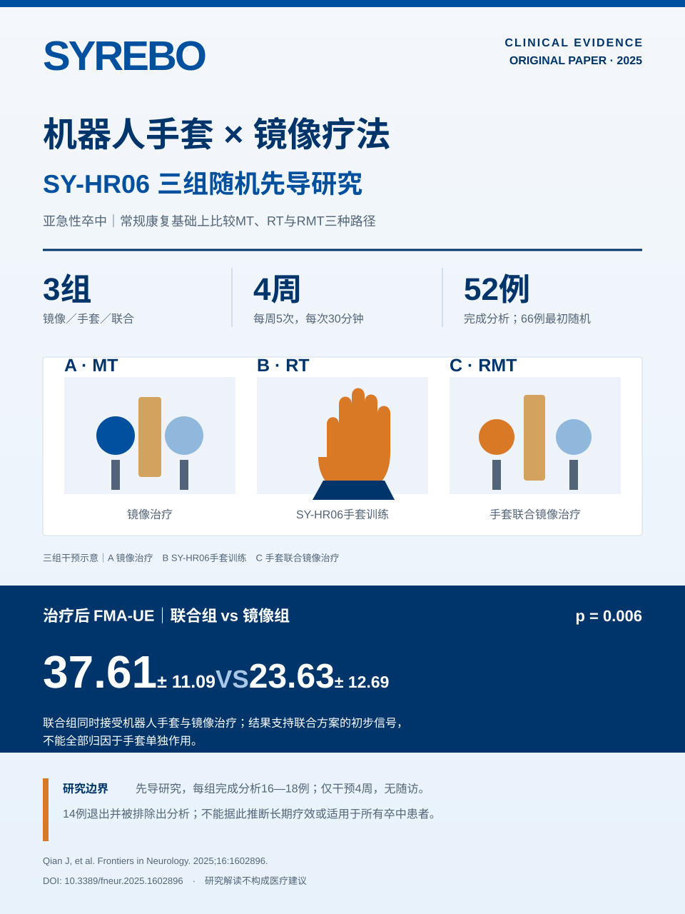

IMAGE EDITION · CLINICAL EVIDENCE
机器人手套 × 镜像疗法：三组随机先导研究
海报保留研究设计、核心数值、设备型号与局限性，适合经销商培训和学术沟通。对外使用时请同时保留“先导研究、无随访”的边界说明。

原始出处：Qian J, et al. Frontiers in Neurology, 2025. DOI: 10.3389/fneur.2025.1602896。论文图片按CC BY 4.0署名使用。
研究边界：66例随机、52例完成分析；4周干预，无随访；联合方案结果不能全部归因于手套单独作用。